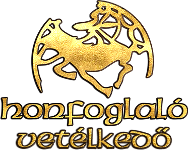

Honfoglaló

A Honfoglaló egy magyar fejlesztésű online stratégiai kvízjáték, amely 2002. október 20-án debütált az interneten. Külföldön is megjelent: Dobyvatel ("Hódító") címen cseh, illetve Triviador címen spanyol, angol, bolgár, orosz, arab, török, portugál, román, német, francia, lengyel, szlovén és szerb nyelven. Később (2003. február 11-től) már társasjáték formájában is játszható volt, ugyanezen nyelveken. A játékot a felhasználói is bővíthetik azzal, hogy kérdéseket küldenek be az oldalra, amik először egy szűrőn mennek át, majd később a játékban is láthatóak is lesznek.

JÁTÉKMENET
A játék célja, hogy kérdéseket megválaszolva minél több megyét lehessen elfoglalni Magyarország térképén. A játék először egy faluban kezdődik, majd a Játékindítás gombra kattintva, aztán pedig a nehézségi fok kiválasztása után indítható el. A nyertes az, aki a legtöbb pontot szerzi meg a játszma végére. A kérdésekre tippelni lehet, illetve megadott válaszokat lehet kiválasztani. Egyszerre 3 játékos játszhat egymás ellen (játszmánként). A 3 játékos színe: piros, zöld, kék (utóbbi helyett korábban a sárga volt használatos) . A játék bázisfoglalással kezdődik, amikor a gép elhelyezi mindhárom játékos várát egy-egy megyében, ezután a játékosok a többi megye megszerzéséért küzdenek kérdések megválaszolásával. Miután elfogyott a térképről az összes szabad megye, megkezdődik a foglalás, amikor a játékosok egymás megyéinek elfoglalására törekednek (harcolnak). A játékban egy megye elfoglalásáért helyes választ kell kiválasztani a négyből; amennyiben mindkét játékos helyesen válaszol, egy tippelős kérdésre közelebbi számot kell megadni, mint az ellenfél, vagy ha ugyanazt a számot adja meg az ellenfél is, akkor a gyorsabban válaszoló játékosé lesz a megye. Egy vár elfoglalásáért háromszor kell végigcsinálni ezt. A játékban több játékmód van (pl.: villámháború, hosszú hadjárat, junior játék, mini bajnokság, játék barátokkal stb.). A külföldi változatok játékmenete nem tér el nagyban, csak a Magyarország-térkép helyett az adott ország térképén lehet játszani.
LIGÁK & RANGLISTÁK
4 FAJTA RANGLISTÁVAL TALÁLKOZHATSZ A HONFOGLALÓBAN:
- Barát
- Személyes
- Megye
- Klán
MINDEN RANGLISTA 3 KATEGÓRIÁRA VAN LEBONTVA:
- Mindenidők: Az összes eddig összegyűjtött XP alapján. Nem kapcsolódik a Ligákhoz.
- Heti: Megmutatja a jelenlegi helyezésedet a Ligán belül. Itt találod, hogy jelenleg melyik ligában harcolsz, ill. hogy kieső, feljebb jutó helyen állsz e, vagy maradsz a jelenlegi ligában a Heti Kihívás végén.
- Múltheti: Az előző héten elért eredményedet mutatja.
VILLÁMHÁBORÚ
Bázis sorsolás
A játékosok Magyarország térképén véletlenszerűen elhelyezett bázismegyét kapnak.
A bázismegyék nem lehetnek egymással szomszédosak és 1000
pontot érnek. Minden bázist egy három tornyú vár jelöl a térképen.
Terjeszkedés
A következő körben a játékosok a megmaradt üres megyékért küzdenek meg egymással.
Minden körben egy tippelős kérdést teszünk fel három játékosnak. Ezekre a kérdésekre a válasz
mindig egy pozitív egész szám. A nyertes az a játékos, aki a helyes válaszhoz legközelebbi választ adja meg.
Ha két válasz egyforma, akkor a gyorsabban válaszooló játékos a nyertes. A nyertes választhat
két megyét, a második helyezett egyet. A játékosok a saját területeikkel szomszédos szabad
megyékből választhatnak. Ha ezek elfogytak, akkor bármelyik szabad terület választható. Az így megszerzett megyék
200 pontot érnek. Ez a forduló addig tart, amíg el nem fogynak a
szabad megyék.
Harc
A játék ezen része 4 körből áll. Ettől a ponttól kezdve a játékosok egymás területeit próbálják meg elfoglalni.
Ez a kör négy fordulóból áll, minden fordulóban minden játékosnak lehetősége
nyílik egy támadásra.
A támadások sorrendje az első három fordulóban véletlenszerű.
| Győzelem típusa | Definíciója | Kitüntetés neve |
|---|---|---|
| Szoros küzdelem | A területek kevesebb mint felét megszerezve | Nagyszerű honfoglaló |
| Fölényes győzelem | A területek több mnt a felét megszerezve | Kiemelkedő honfoglaló |
| Teljes térképes győzelem | A teljes térkép elfoglalása | Király Honfoglaló |